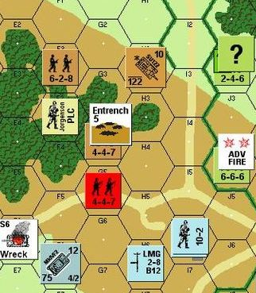

Wargaming is an ancient pursuit, but its modern form began as a professional training exercise in 19th-century Prussian staff colleges; since at least as early as H. G. Wells's "Little Wars" (1913) it has been a hobby of "boys from twelve years of age to one hundred and fifty and for that more intelligent sort of girl who likes boys' games and books." The free-form tabletop game used miniature figures and tape-measured movements, and remains the dominant form today. But in the mid-20th century, map grids on printed sheets gave the hobby a sudden new lease of life. They were easier to set up, more interesting to look at, cheaper to sell by mail-order. 1970s sales figures for "Strategy and Tactics", the leading US subscription-based wargame distributor, were very similar to those of Infocom's IF games in the 1980s. And like classical IF, the grid-based wargame parceled up a continuous world into locations.
Grids were initially square, as on a chessboard, but square cells have several disadvantages. Four directions of movement (N, E, S, W) is too few, yet allowing movement in the diagonal directions means allowing tanks to travel about 1.4 times faster northeast than they do north. Square grids also only conform cleanly to man-made landscape features such as buildings in one orientation, and they never fit hills well. (A compromise measure to fix this, cutting the squares into octagons to leave smaller diamond squares at corner intersections, has never caught on.)

But following Charles S. Roberts's American Civil War designs for Avalon Hill of 1958-61 (notably "Chancellorsville" and the second edition of "Gettysburg"), a hexagonal grid became the new standard. Each hexagon is the same distance from the centre of all six of its neighbours, which are at equal angular spacings; and clumps of hexagons fit the shape of lakes, contoured hills, and so forth, much more naturally than clumps of squares do. Hexes also have a certain mystique – an air of "I don't belong in the children's department".
But hexes are tricky for IF, not least because English lacks words for "the direction 60 degrees around from front". Our cognitive view of the world tends to be square, perhaps because our two eyes both face front, in a direction at right angles to the plane of our arms, legs, pelvis and eyes. We reach out sideways at right angles to our walking. Even early hex-grid wargames called the cells "squares", though "hexes" eventually caught on. Still and all:
Forward is a direction. Forward has opposite backward. Understand "f" as forward.
Backward is a direction. Backward has opposite forward. Understand "b" and "back" as backward.
Forward left is a direction. Forward left has opposite backward right. Understand "fl" as forward left.
Forward right is a direction. Forward right has opposite backward left. Understand "fr" as forward right.
Backward left is a direction. Backward left has opposite forward right. Understand "bl" as backward left.
Backward right is a direction. Backward right has opposite forward left. Understand "br" as backward right.
Now to forbid the use of the compass directions:
A direction can be hexagonal or squared-off. A direction is usually squared-off. Forward, backward, forward left, forward right, backward left and backward right are hexagonal.
Before going a squared-off direction, say "In this hexagonally-divided landscape, squared-off directions are not allowed." instead.
A slight nuisance is that, with things as they are above, typing BACKWARD produces the response "Which do you mean, backward, backward left or backward right?" To avoid that silly question, we write:
Does the player mean going backward: it is very likely. Does the player mean going forward: it is very likely.
And now a clump of 37 hexes, in six columns of six or seven rooms each. There are many ingenious ways we could put this map together automatically, but instead we will take a deep breath and write:
E1 is forward of E2. "Open farmland." E2 is forward of E3. "The edge of woods." E3 is forward of E4. "Deep woodland." E4 is forward of E5. "Deep woodland." E5 is forward of E6. "The rear edge of woods." E6 is forward of E7. "The start of a road leading forward right." E7 is a room. "Grassland."
F1 is forward of F2. "The edge of farmland." F2 is forward of F3. "The edge of woods." F3 is forward of F4. "Clearing in woods." F4 is forward of F5. "Deep woodland." F5 is forward of F6. "A road runs backward left to forward right." F6 is a room. "The edge of grassland."
G1 is forward of G2. "Grassland." G2 is forward of G3. "The edge of farmland." G3 is forward of G4. "A copse of trees." G4 is forward of G5. "The backward edge of woodland." G5 is forward of G6. "A bend in the road, from backward left to backward right." G6 is forward of G7. "Open farmland." G7 is a room. "Open farmland."
H1 is forward of H2. "Grassland, bordered by a hedge to the right." H2 is forward of H3. "The edge of farmland, with a hedge to forward right." H3 is forward of H4. "A copse of trees." H4 is forward of H5. "Open farmland." H5 is forward of H6. "A passing place on the road, which bends forward left to forward right." H6 is a room. "Open farmland."
I1 is forward of I2. "The end of a forward road, blocked by hedges on all sides except backward." I2 is forward of I3. "A straight road runs forward to backward, with long hedges to left and right." I3 is forward of I4. "A straight road runs forward to backward, alongside a long hedge to right." I4 is forward of I5. "A straight road runs forward to backward, alongside a long hedge to right." I5 is forward of I6. "Where three roads, forward, backward left and backward right, meet. Forward right is a thick hedge." I6 is forward of I7. "Open farmland." I7 is a room. "Open farmland."
J1 is forward of J2. "Dense woodland, with a hedge to left." J2 is forward of J3. "Grassland, with a hedge to left." J3 is forward of J4. "The edge of farmland, with a hedge to left." J4 is a room. "Open farmland, with a long hedge blocking movement forward left, backward left or backward." J5 is forward of J6. "A road running forward left to backward right, alongside a hedge." J6 is a room. "Open farmland."
F1 is forward right of E2 and backward right of E1. F2 is forward right of E3 and backward right of E2. F3 is forward right of E4 and backward right of E3. F4 is forward right of E5 and backward right of E4. F5 is forward right of E6 and backward right of E5. F6 is forward right of E7 and backward right of E6.
G1 is forward right of F1. G2 is forward right of F2 and backward right of F1. G3 is forward right of F3 and backward right of F2. G4 is forward right of F4 and backward right of F3. G5 is forward right of F5 and backward right of F4. G6 is forward right of F6 and backward right of F5.
H1 is forward right of G2 and backward right of G1. H2 is forward right of G3 and backward right of G2. H3 is forward right of G4 and backward right of G3. H4 is forward right of G5 and backward right of G4. H5 is forward right of G6 and backward right of G5. H6 is forward right of G7 and backward right of G6.
I3 is forward right of H3 and backward right of H2. I4 is forward right of H4 and backward right of H3. I5 is forward right of H5 and backward right of H4. I6 is forward right of H6 and backward right of H5.
J5 is forward right of I6 and backward right of I5. J6 is forward right of I7 and backward right of I6.
And now we have a hexagonally-gridded world. Route-finding will work; prepositional forms like "to be mapped backward left of" exist, just as they should; and in general these directions are just as good as the square ones. (The only thing which doesn't look good is the Index map, where Inform is just unable to draw a picture because it assumes a square grid. But that has no effect on play.)
The landscape is much easier to navigate with a little diagram:
To say legend (D - direction):
let destination hex be the room D from the location;